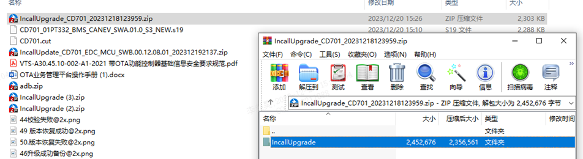
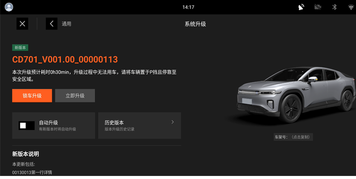
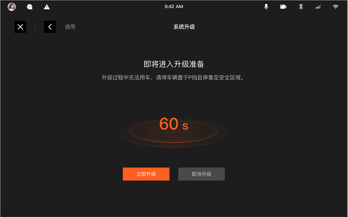
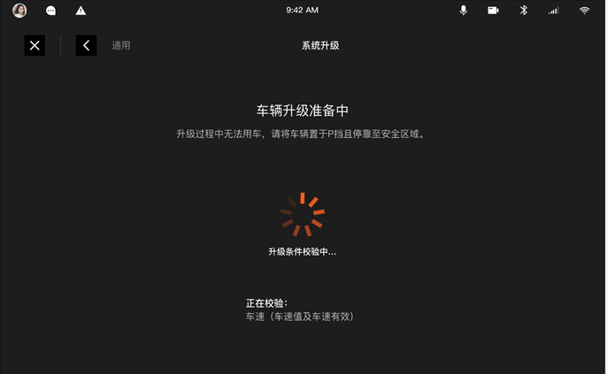
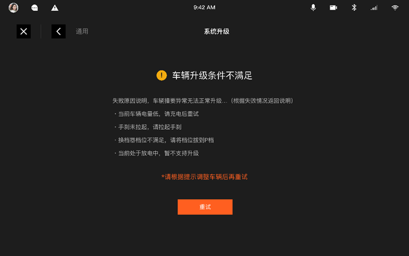

Подготовительные работы к обновлению с USB-накопителя
Контроллеры, необходимые для обновления с USB-накопителя: EDC и контроллеры, требующие обновления.
Инструменты, необходимые для обновления с USB-накопителя: USB-накопитель, инструмент для создания пакетов обновления для USB-накопителя (предоставляется командой OTA).
Требования к пакетам обновления для объектов обновления с USB-накопителя:
Для объектов обновления FBL, таких как MCU VIU/EDC и т. д., подготовить соответствующий пакет обновления в формате.sdb (можно обратиться к системному инженеру OTA для его генерации).
Для объектов обновления системного ПО, таких как ОС C2 / ОС блока A EDC, подготовить архивный файл объекта обновления.
Обратитесь к соответствующему системному инженеру OTA для получения.
Распаковать загруженный ZIP-файл, поместить полученную после распаковки папку IncallUpgrade в корневой каталог USB-накопителя.

Примечание: в корневом каталоге USB-накопителя должна быть только одна папка IncallUpgrade, предназначенная для обновления, файлы с одинаковыми именами следует удалить.
1. При подключении USB-накопителя появится всплывающее окно с информацией об обнаружении пакета обновления на накопителе
Нажать «Установка»
Интерфейс подготовки данных обновления

После завершения копирования нажать кнопку «Обновить сейчас»
2. Переход к этапу обновления

Нажать «Обновить сейчас», чтобы пропустить обратный отсчет

Переход в интерфейс проверки условий обновления

По завершении проверки обновление завершается.
После отправки OTA-задачи из облака при включении зажигания головное устройство автоматически проверит версию программного обеспечения; при появлении подсказки об обновлении версии нажать «Обновить» и выполнить действия в соответствии с подсказками на автомобиле.